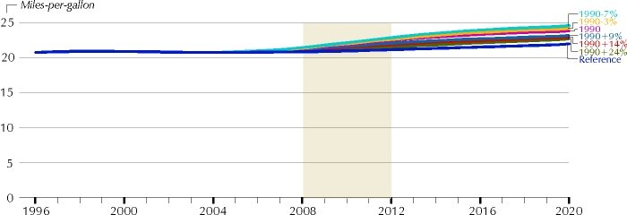

What Does the Kyoto Protocol Mean to U.S. Energy Markets and the U.S. Economy
All
Sectors Need to Adjust; Motor Vehicles Face Main Non-Electric Impact
EIA assumes that carbon prices would be imposed at the point of
consumption--raising the "delivered" prices of both primary fuels and
electricity across the board. Because various fuels face different price increases (based
on their different carbon contents), all end-use sectors will not be affected identically.
History has shown that residential, commercial, industrial, and transportation users of
energy react differently to price changes.
As energy costs rise, all consumers tend to
use less. In the broadest terms, the required carbon reductions could prompt the nation to
lower "energy intensity" (the quantity of energy consumed per dollar of Gross
Domestic Product) as much as three times faster between 2005 and 2010 than in the
Reference Case. The rate of decline slows after 2010 reaching a decline rate from 1.4 to
1.7 percent for the 2005 to 2020 period. In the Reference Case, energy intensity declines
at 0.9 percent per year.
2010 Carbon Reductions Projected By End-Use-Sectors
In all cases, consumers have a
price incentive to reduce their demand for energy services, to switch to lower-carbon
energy sources, and to invest in more energy-efficient technologies. A number of more
efficient and lower-carbon technologies for electricity generation become economically
available as the carbon price raises fossil-fuel prices. Those who produce and sell
electricity are likely to respond vigorously to higher fuel prices because this industry
has long been accustomed to factoring future energy prices into investment choices; and
competition is becoming keener because of ongoing regulatory reforms. By contrast,
residential consumers tend to respond less to fuel prices, paying more attention to other
factors (such as style, familiarity, convenience).
However, electricity prices, which are 20
to 86 percent higher than the reference case in 2010, are more than matched in percentage
terms by the projected 25- to 147-percent rise in natural gas prices due to increased
demand and the inclusion of the "carbon price." Thus, in end-uses where
electricity competes with natural gas (such as home heating), the former becomes
relatively more attractive. Although petroleum products, on average, contain more carbon
than does natural gas, the price of natural gas would be increased by a greater
percentage, in part because current prices for gasoline (a major end use of petroleum)
incorporate Federal and State taxes. Also, lower world oil demand as a result of the
Protocol would lower crude oil prices and offset part of the "carbon price" on
oil products.
As prices for any factor of production
increase, all goods and services reflect some cost increases they otherwise would not see.
As higher energy prices are transmitted throughout the economy, people will react in part
by buying less of everything. To some extent, this means U.S. industry and business must
cope with smaller product demand, so that total output falls (thus cutting back further on
emissions). In addition, industrial consumers of energy are prompted to replace existing
facilities and adopt more efficient technology faster (assuming investment dollars are
available), besides switching to less carbon-intensive fuels. The net result is an
incremental gain in energy efficiency. If demand for energy-efficient products in the U.S.
market should coincide with the appearance of new inventions and processes, a situation
analogous to the rapid improvements and cost reductions in computers might occur. However,
EIA does not include "breakthroughs" in end-use and generating technologies that
are not yet on the drawing board because it is unlikely that they could be developed and
penetrate rapidly enough to be significant in the 2008-2012 time period.
Higher fuel prices reduce total residential
demand for energy, by promoting the installation of more efficient building shells,
heating- and cooling- units, water heaters, and other end-use technologies, which results
in larger carbon reductions than cutting back on miscellaneous items such as computers, TV
sets, and VCRs. While total energy use by 2010 was projected at 184 million Btu per
household in the Reference Case, it ranges between 145 and 173 million Btu in the six
carbon reduction cases analyzed.
Differential Rises In End-Use Prices Affect Sectoral Energy Demand in the 1990 +9% Case
Space conditioning (heating, cooling, and
ventilation) is the most significant energy use in the commercial sector, representing the
best opportunity for reducing carbon emissions in the future. More efficient lighting and
office equipment also contribute to carbon reductions (along with some modifications in
the use of computer and telecommunications equipment). Total energy use per square foot of
commercial floorspace in 2010 (206 thousand Btu in the Reference Case) is projected across
the cases to drop to between 148 and 192 thousand Btu.
The U.S. transportation sector represents
the single largest target for carbon reductions apart from electricity generation, because
the transport sector is the biggest U.S. consumer of petroleum by far. A combination of
more efficient vehicles and less travel would be needed across all modes. Total petroleum
consumption in the transportation sector is between 2 and 16 percent lower in 2010 than in
the Reference Case. Because of the impact of higher energy prices on the economy, there is
less demand for air travel and freight shipment. In addition, airline fares are higher as
a result of higher jet fuel prices, so air travel is between 1 and 18 percent lower.
Consumption by aircraft is between 1 and 16 percent lower and freight trucks consume 1 to
6 percent less fuel.
Rising Price Could
Level Off or Lower Gasoline Use
In approximately the past 25 years Americans have doubled the
number of vehicle-miles traveled on U.S. streets and highways, increasing the average
miles traveled per vehicle by about 12 percent. In the Reference Case, however, this
rising trend is projected to slow modestly--even without the addition of a "carbon
price" at the gasoline pump. Baby-boomers are aging, driving age population growth is
slowing, miles driven by women are approaching a gender-equilibrium, and there are more
older cars on the road (which typically are not driven as much as new cars). Historically,
increases in gasoline prices have not done much to decrease the overall steady upward
climb in motor fuel consumption.
Average Price of Motor Gasoline
Across the cases, the average price of
gasoline increases by between 11 and 53 percent beyond the Reference Case price in 2010.
In the 1990+24% Case, the average price of gasoline is only about 15 cents above 1996
prices in 2010 (1996 dollars). For the 1990+9% Case, the average price of gasoline peaks
around 2008 at approximately 30 cents per gallon above where it was in 1996 ... and about
10 cents more than it was in 1990. In the 1990-3% Case, the average price of gasoline
peaks at slightly more than $1.80 a gallon in 2009, while in the 1990-7% Case, it almost
reaches $2.00 a gallon.
The addition of a "carbon price"
is expected to reduce auto travel and increase the purchase of more efficient vehicles,
reducing gasoline demand between 3 and 18 percent in 2010. Improvements in truck, auto,
and plane efficiency are moderated by slow turnover rates. The stock of U.S. vehicles is
so large that its average performance lags far behind advances in new car mileage.
Increasing new car efficiency in 2010 by 1 to 6 miles per gallon above the 30.6 miles per
gallon in the Reference Case improves the rating of the entire stock of light-duty
vehicles by only about one mile per gallon or less.
Consumption of Motor Gasoline
EIA assumed that more than 50 fuel-saving
technologies would be available to makers of light- duty vehicles during the period
examined--ranging from electronic transmission controls to reduced cylinder friction; but
a major uncertainty is whether consumers will purchase fuel efficient vehicles or continue
the recent trend toward light trucks and sports utility vehicles. Some reversal is
expected, particularly when the carbon price is relatively high. For example, in the
1990+9% case, the subcompact share of new car sales in 2010 is 19 percent compared to 12
percent in the Reference Case, reducing sales of compact, midsize, and large vehicles by 2
percentage points each. The annual increase in average horsepower ratings in the 1990+9%
Case is about half that of the Reference Case.
The Reference Case foresaw sales of about
1.8 million alternative-fuel vehicles by 2010, but this number would not be affected much
by imposition of a carbon price. While AFV's use less fuel than autos with gasoline
engines, they are generally more expensive overall due to their higher vehicle prices.

Average Mileage Ratings for the Stock of Light-Duty Vehicles
Industrial
Energy Efficiency, Already Rising, Would Further Improve
The industrial sector includes agriculture, mining, construction
and manufacturing. Energy has represented a relatively small fraction of total production
costs in most industries (ranging from less than 2 percent for the food industry to as
much as 30 percent of production costs annually for the cement industry.) Consequently,
the price of energy has not played a dominant role in recent years in improving industrial
energy efficiency.
Total U.S. Energy Use Falls in Relation to the Value of Output
U.S. energy intensity (energy input per
dollar GDP output) has been influenced by two factors in the U.S. economy. First,
structural shifts have occurred where the mix of goods and services has shifted away from
the production of energy intensive goods (e.g.,iron and steel) and toward services (e.g.,
telecommunications, entertainment). Second, technological improvements (e.g., continuous
casting and electric arc furnaces) have impacted industrial efficiency. For more than a
quarter century, the gradual migration of heavy industry and primary metals abroad, growth
in the U.S. service sector and technological progress have combined to reduce U.S. energy
intensity by about 1.4 percent annually.
Growth in Industrial Delivered Energy Consumption Slowed by Higher Prices
The Reference Case projection embodies
considerable improvement in energy intensity. Just as lower real prices for oil, gas, and
electricity during the late 1980s lowered incentives for energy conservation, the higher
prices projected in connection with meeting the Kyoto carbon emission reduction goals
result in less energy consumed for each constant dollar of output produced. This analysis
projects a replay of the early 1980s, when the cost of both energy and capital inputs were
rising. Across the cases, about two-thirds of the projected reduction in industrial energy
intensity is attributable to the structural effect (change in the mix of goods and
services); the remaining one-third to increased energy efficiency.
In the carbon reduction cases, relative to
the Reference Case in 2010, total carbon emissions from the industrial sector are between
7 and 28 percent lower. Part of this is due to lower U.S. industrial production because
higher energy prices lower domestic demand and make U.S. exports relatively more
expensive. In addition, industrial consumers are likely to replace existing capacity
somewhat faster, invest in more efficient technology, and switch to less carbon-intensive
fuels.
Energy
Efficiency Could Improve in the Buildings Sectors With Rising Prices
Rapid development and adoption of new electrical
devices--computers, telecommunications equipment, and other appliances--have expanded
energy demand in the residential and commercial sectors. Increasing energy prices could
lower total demand in the two sectors by between 7 and 25 percent in 2010.
Energy Use Per Household Could Fall But Not Match Earlier Decline
Periods of increasing energy prices appear
to have had little impact on commercial energy demand, as seen by comparing the price
increases in the 1970s with the change in demand. Energy prices are only one factor in
choices for buildings, appliances, and equipment in these sectors. How consumers react to
higher prices by reducing the demand for energy services--less heating and cooling,
reduced lighting, etc.--will be a major factor in lowering energy demand.
Buildings Delivered Energy Consumption Drops with Higher Prices
Technology improvements could
have the largest impact for space conditioning-- heating, cooling, and ventilation--which
is the most intensive use of energy in buildings, but the penetration of more efficient
equipment is slowed by the gradual pace of stock turnover. Improved lighting technologies
will also be important, as well as improvements in building shells--insulation and
windows.

Rising Prices Could Reduce Commercial Energy Use Per Square Foot
Standards on new buildings and some
energy-using equipment have been important in dampening the growth in energy consumption,
leaving less opportunity for future improvements. Energy demand by white goods--freezers,
refrigerators, dishwashers, clothes washers and dryers, stoves--declines even in the
Reference Case primarily due to past standards on refrigerators and freezers and one that
becomes effective in 2001.
Shift Toward Natural
Gas and Renewables Characterizes New Energy Mixes
In order to meet the Kyoto Protocol targets, the proportion of
each fuel used in the United States is projected to change from that of the Reference
Case. Because of the higher relative carbon content of coal and petroleum products, those
two energy sources would be used less--placing more reliance on natural gas and renewable
energy, and slowing the decline in nuclear power. Although petroleum use declines relative
to the Reference Case in absolute terms, its percentage-share increases slightly because
total energy demand is lower in the carbon reduction cases. Most petroleum is used in the
transportation sector--where there are limited economic options for fuel substitution. As
noted earlier, domestic coal consumption declines substantially, with most of the
reduction coming in electricity generation.
Consumption of Natural Gas by Electric Generators
Because of lower demand for petroleum in
the United States and other developed countries committed to reducing greenhouse gas
emissions, world oil prices in 2010 would be about 4 to 16 percent lower than they would
have been without the effect of any "carbon price." At the same time, U.S.
dependence on imported petroleum by 2010 would be lessened--from about 59 percent of all
petroleum consumption in the Reference Case to as much as 53 percent.
More use of natural gas in electric
generation is offset only partly by reductions from the end-use sectors. Although carbon
emissions from burning natural gas are lower than from coal or petroleum, they are not
zero. Later in the forecast period, natural gas starts to face stiffer competition from
increasingly economic non-hydro renewables and, particularly in the more stringent carbon
reduction cases, from refurbished existing nuclear power units. As a result, by 2020,
natural gas use is highest in the 1990+9% Case.
Consumption of Natural Gas by Industrial, Residential, Commercial and Vehicle Users
Higher demand forces up the average
wellhead price of gas, relative to the Reference Case--moderately by 2010 ($2.78 per
thousand cubic feet for the 1990+9% Case, vs. $2.33 for the Reference Case) but
considerably by 2020 ($3.71 vs. $2.62). Although the natural gas industry will be tested
in meeting levels of production that may be required, sufficient resources are available.
There is historic precedent for the necessary increases in drilling and pipeline capacity,
but appropriate market incentives and careful planning will be needed.
Most of the increase in renewable energy
sources is likely to occur in electricity generation, primarily with additions to wind
energy systems and an increase in the use of biomass (wood, switch grass, and refuse); but
the overall renewable contribution by 2008-2012 will remain small compared to traditional
sources. If the market penetration of additional renewable technologies is enhanced by
carbon pricing, however, the renewables' share of generation will continue to increase
through 2020.
U.S. Fuel Mix Projections for 2010
 More on Kyoto... More on Kyoto...
|
{kind=link}
{kind=link}
{kind=link}
{kind=link}
{kind=link}
{kind=link}
{kind=link}
{kind=link}
{kind=link}
{kind=link}
{kind=link}
{kind=link}